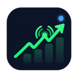

Turn stock posts into clear, filterable signals.
| TIME | ACCOUNT | TICKER | TYPE | DIRECTION | ACTION | CONCLUSION | CONFIDENCE | ORIGINAL |
|---|---|---|---|---|---|---|---|---|
| 10:42 AM | @marketbrief | NVDA | Forecast | Long | Bullish target | Expects a breakout above resistance with a $145 target. | 91% | View post ↗ |
| 10:18 AM | @trenddesk | TSLA | Trade | Short | Open short | Opened a short position after support failed. | 88% | View post ↗ |
| 9:55 AM | @signalnotes | AMD | Recommendation | Long | Buy | Recommends buying near support for a swing setup. | 84% | View post ↗ |
| 9:31 AM | @equitywatch | GOOGL | Trade | Long | Hold | Maintains the current long position into the next quarter. | 79% | View post ↗ |